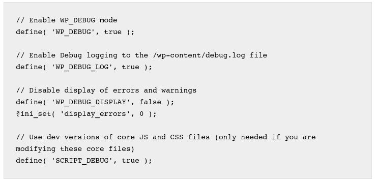

Web Debug Enabled
Summary
Enabling a debug feature in both apps and web servers is a common practice when developing applications, as it helps to locate and fix errors quickly.
The danger of this practice resides when web debug remains enabled in production servers: this allows remote attackers to identify sensitive information from the app or the system where they are hosted, such as notices, warnings, and critical errors, that can be later used to launch targeted attacks against certain CVEs.
- Exposing debug messages is considered bad practice, as it discloses a lot of information about the environment that would otherwise not be accessible
- Worst case, debug information can contain sensitive information such as environment variables containing API keys
Solution
- Disable the debug feature on the application or the web server.
Further Reading
- https://www.php.net/manual/en/function.error-reporting.php
- https://docs.microsoft.com/en-us/troubleshoot/developer/webapps/aspnet/development/disable-debugging-application
- https://wordpress.org/support/article/debugging-in-wordpress/

Last update:
2022-03-14